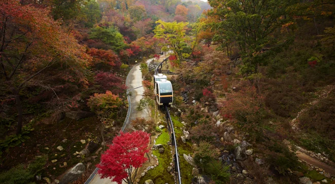
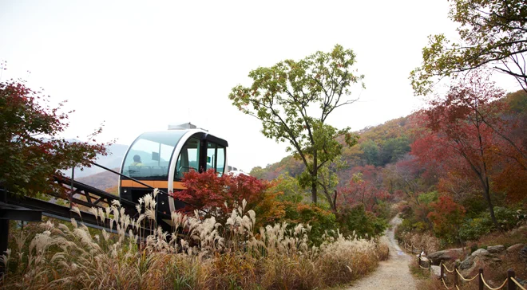
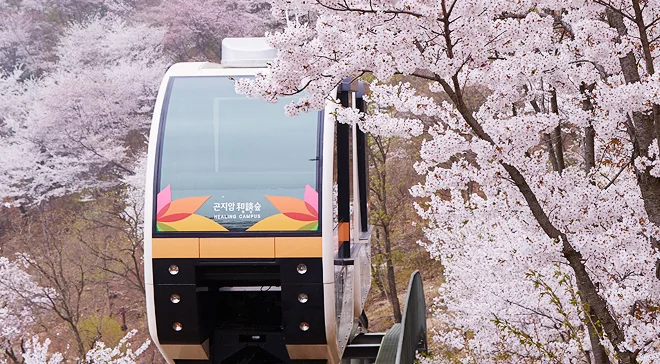
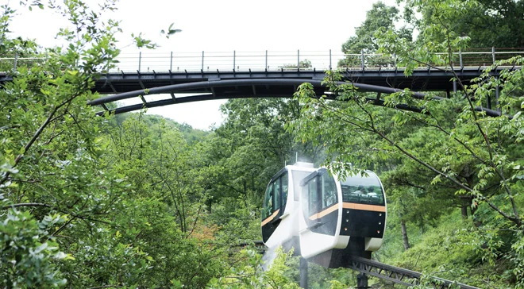
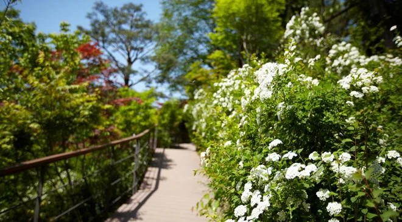

▲ 단풍철 화담숲을 오르는 모노레일. 이 구간은 성수기마다 가장 먼저 매진되는 인기 코스다 ⓒ 곤지암리조트
1. 화담숲은 애초에 '줄 서서 들어가는 곳'이 아니다
화담숲은 경기 광주시 도척면에 있는 수목원으로, 곤지암리조트 안에 자리하고 있습니다. LG상록재단이 조성한 곳으로, 약 4,300여 종의 국내외 식물을 17개 테마로 나눠 전시합니다.
이 수목원의 운영 방식이 다른 관광지와 다른 점이 하나 있습니다. 예약 없이 방문하면 아예 입장이 불가능합니다. 현장 발권이나 당일 구매 창구 자체가 없습니다. 날짜와 입장 시간대를 지정해 온라인으로 결제하고, 발급된 QR코드를 입구에서 스캔하는 방식으로만 들어갈 수 있습니다.
| 구분 | 내용 |
|---|---|
| 주소 | 경기 광주시 도척면 도척윗로 278-1 |
| 운영시간 | 09:00 ~ 18:00 (마지막 입장 17:00) |
| 휴원일 | 매주 월요일 |
| 예약 방법 | 화담숲 공식 홈페이지 또는 NOL(야놀자·인터파크) |
입장 시간도 유동적이지 않습니다. 예약한 시간 30분 전부터 QR이 활성화되고, 입장 시간 이후 약 2시간 안에 들어가야 합니다. 이 시간을 놓치면 입구에서 재발권을 받을 수 없는 구조입니다.
2. 가을 예약, 9월 16일 오후 1시에 열린다

▲ 억새와 단풍이 함께 물드는 구간. 성수기 관람 기간은 10월 23일부터 11월 15일까지로 예상된다 ⓒ 곤지암리조트
2026년 가을 단풍 시즌 예매는 9월 16일(수) 오후 1시에 열릴 것으로 알려졌습니다. 이 일정은 화담숲 공식 채널 외에도 여러 여행 정보 매체를 통해 반복적으로 안내되고 있지만, 아직 화담숲이 직접 공지한 확정 일정은 아닙니다. 출발 전 공식 홈페이지에서 최종 오픈 시각을 한 번 더 확인하는 편이 안전합니다.
성수기 관람 기간은 10월 23일(금)부터 11월 15일(일)까지, 24일간으로 예상됩니다. 화담숲은 부지가 넓고 해발 고도 차이가 커서 산 정상부터 단풍이 들기 시작해 아래로 내려오는 특징이 있습니다. 그래서 이 24일이 지나도 10월 중순부터 11월 말까지 비교적 넓은 기간 동안 단풍을 볼 수 있습니다.
다만 예매 경쟁은 이 24일에 집중됩니다. 성수기 주말은 예매 오픈 후 이른 시간 안에 마감되는 경우가 많다고 알려져 있어, 원하는 날짜와 시간대가 있다면 예매 오픈 시각에 맞춰 접속하는 것이 사실상 유일한 방법입니다. 로그인과 본인인증은 미리 끝내두는 편이 좋습니다.
3. 입장료와 모노레일은 별도 요금이다

▲ 봄철 벚꽃 구간의 모노레일. 화담숲은 사계절 운영되지만 요금 체계는 계절과 무관하게 동일하다 ⓒ 곤지암리조트
입장료만으로는 산책로 이용까지만 가능합니다. 모노레일은 완전히 별도 요금입니다.
| 구분 | 요금 |
|---|---|
| 성인(만 19~65세) | 11,000원 |
| 경로 · 청소년 | 9,000원 |
| 어린이 | 7,000원 |
| 24개월 미만 | 무료 |
| 구간 | 소요시간 | 성인·경로·청소년 | 어린이 |
|---|---|---|---|
| 1구간 | 약 5분 | 5,000원 | 4,000원 |
| 2구간 | 약 10분 | 7,000원 | 6,000원 |
| 순환(1→1) | 약 20분 | 9,000원 | 7,000원 |
가장 인기 있는 구간은 순환 코스입니다. 출발 승강장으로 돌아오는 20분짜리 코스라 걷지 않고도 화담숲 전체를 조망할 수 있어 예매 오픈과 동시에 빠르게 매진되는 경향이 있습니다.
주의할 점은 성수기 할인 정책입니다. 단풍철인 10~11월에는 통신사 할인을 포함한 대부분의 우대 할인이 중단되고 정상 요금만 적용됩니다. 광주 시민은 평일 50%, 주말·공휴일 30% 할인을 신분증 확인 후 받을 수 있지만, 이 역시 성수기 예외 여부는 현장 공지를 따라야 합니다.
4. 주차는 무료다 — 대신 자리 경쟁은 각오해야 한다

▲ 여름철 화담숲. 예약제는 사계절 동일하게 적용되지만, 주차 혼잡도는 계절과 요일에 따라 크게 갈린다 ⓒ 곤지암리조트
주차 요금은 전 구간 무료입니다. 이용 가능한 주차장은 곤지암리조트 주차장, 화담숲 전용 주차장, 슬로프 주차장 세 곳으로 나뉩니다. 이 중 슬로프 주차장이 화담숲 입구와 가장 가깝습니다.
다만 요금이 무료라는 점이 오히려 혼잡을 키우는 요인이기도 합니다. 주말이나 공휴일에는 낮 12시 이후 만차가 될 가능성이 높다고 안내됩니다. 자가용으로 이동한다면 내비게이션에 '화담숲' 또는 '곤지암리조트'를 검색해 진입하되, 현장 주차요원의 안내에 따라 지정된 구역에 세워야 합니다.
주차 걱정을 줄이려면 평일 오전 8~10시 사이 도착이 가장 여유롭습니다. 예약 시간대를 이른 오전으로 잡을 수 있다면, 굳이 주차장 앞에서부터 긴장할 필요가 없습니다.
대중교통도 대안이 됩니다. 경강선 곤지암역이나 곤지암 터미널에서 하차해 택시 또는 광주9번 버스로 갈아타는 방법입니다. 성수기 주말에 주차 자체가 부담스럽다면 고려할 만합니다.
5. 예매 실전 팁 — 놓치면 되돌릴 방법이 없다

▲ 여름철 산책로. 예약 없이 방문하면 이 길조차 걸어볼 수 없다 ⓒ 곤지암리조트
첫째, 예매 대상을 정확히 선택해야 합니다. 온라인 예매에서 경로·청소년 같은 할인 대상을 잘못 고르면, 현장에서는 차액만 결제하는 것이 아니라 예매 전체를 취소하고 다시 예매해야 합니다. 성수기에 매진 상태라면 이 재예매 자체가 불가능해 입장이 거부될 수 있습니다.
둘째, 입장 시간을 넘기지 않아야 합니다. 예약한 시간이 지나면 입구에서 통과시켜주지 않는 구조이므로, 시간이 애매하다면 늦기보다 일찍 도착해 매점 근처에서 대기하는 편이 낫습니다.
셋째, 모노레일까지 함께 탈 계획이라면 입장 시간과 모노레일 탑승 시간 사이에 1시간 이상 여유를 두는 것이 권장됩니다. 입구부터 승강장까지 걷는 시간과 대기열을 감안한 수치입니다.
넷째, 취소 수수료도 확인해야 합니다. 당일 취소나 미방문 시 결제 금액의 30%가 수수료로 빠집니다. 일정이 불확실하다면 예매를 서두르기보다 일정부터 확정하는 편이 낫습니다.
6. 정리 — 이 여행의 승부는 현장이 아니라 9월 16일에 갈린다
화담숲은 도착해서 걱정할 곳이 아니라, 예매 오픈 시각에 미리 대비해야 하는 곳입니다. 아무리 일찍 출발해도, 예약이 없으면 매표소 앞에서 발길을 돌려야 합니다.
정리하면 이렇습니다. 9월 16일 오후 1시(예정) 예매 오픈에 맞춰 로그인을 끝내두고, 순환 모노레일이 필요하다면 입장권과 함께 같이 예매하고, 성수기 주말이라면 오전 이른 시간대를 노리는 것입니다. 나머지는 현장에서 자연스럽게 풀립니다.